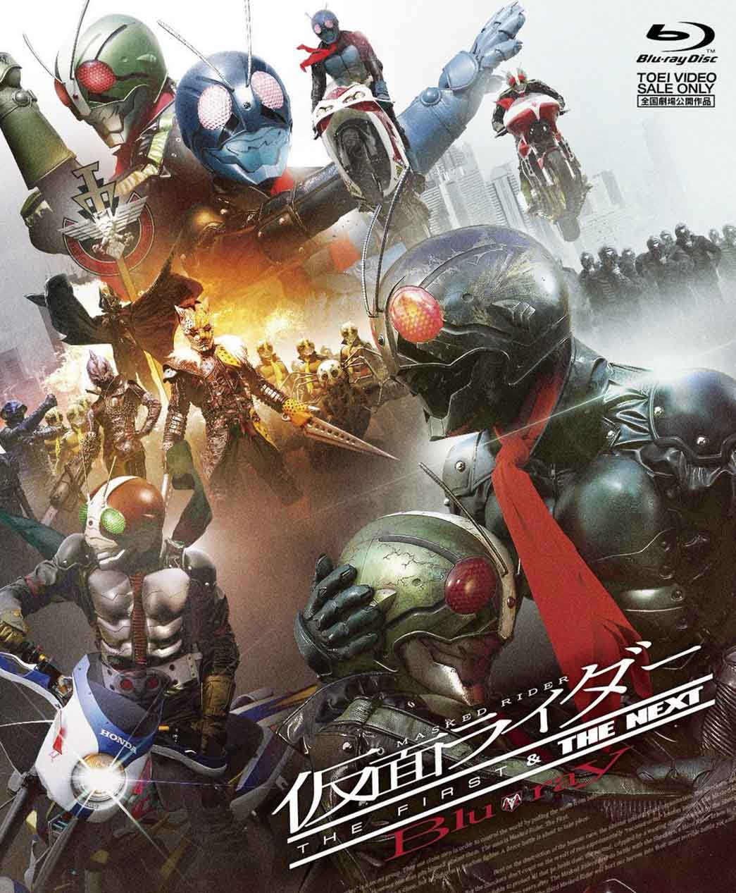
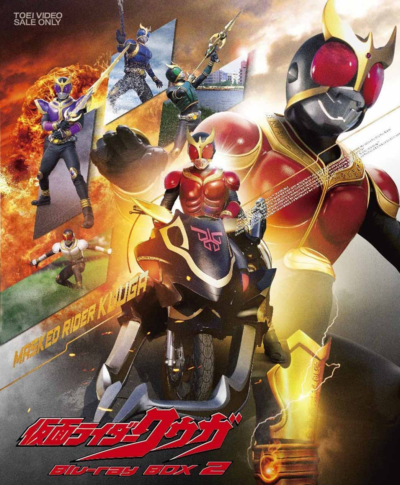
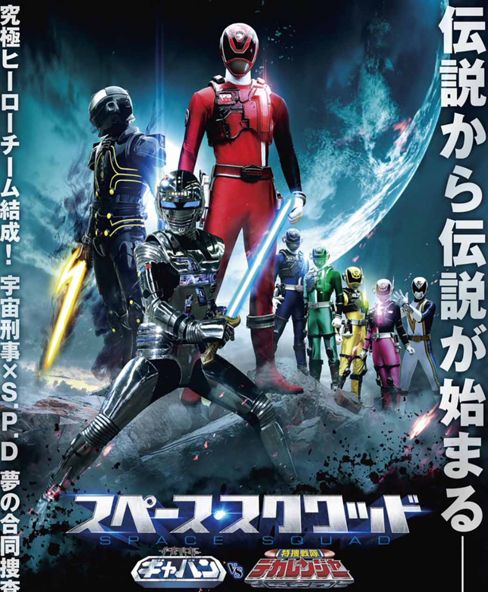
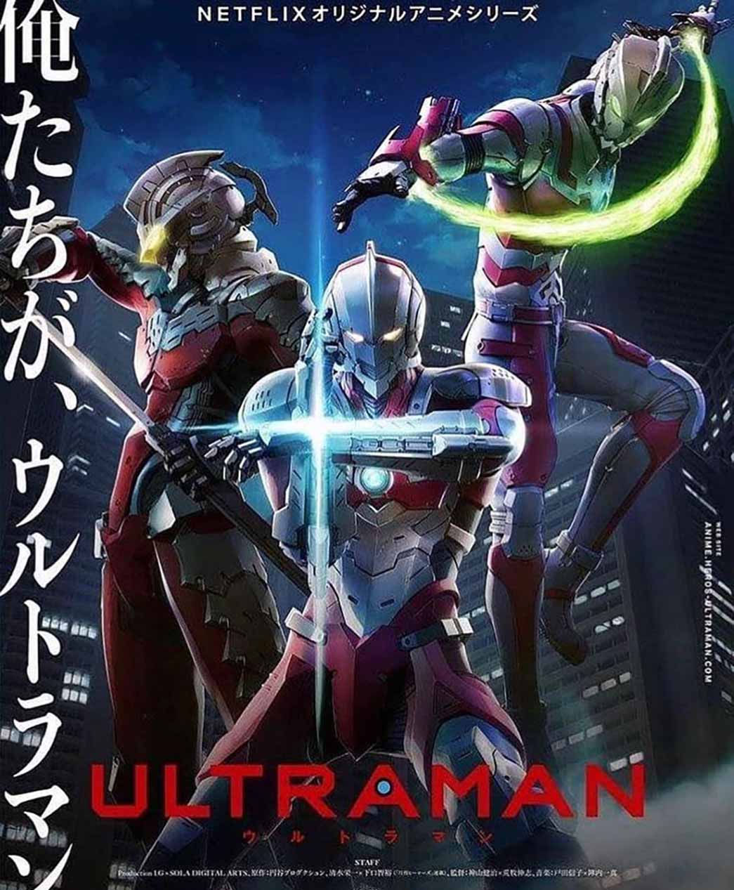

KAMEN RIDER ZERO-ONE

KAMEN RIDER - THE FISRT & THE NEXT

KAMEN RIDER ZI-O

KAMEN RIDER KUUGA

KAMEN RIDER BLACK

ESQUADRÃO RELAMPAGO CHANGEMAN

COMANDO ESTELAR FLASHMAN

ESQUADRÃO DE INVESTIGAÇÃO ESPECIAL DEKARANGER - DEZ ANOS DEPOIS

ESQUADRÃO PIRATA GOKAIGER vs POLICIAL DO ESPAÇO GAVAN: O FILME

SPACE SQUAD: GAVAN VS. DEKARANGER

ULTRAMAN - HAYATA

ULTRAMAN - O FILHO DE HAYATA